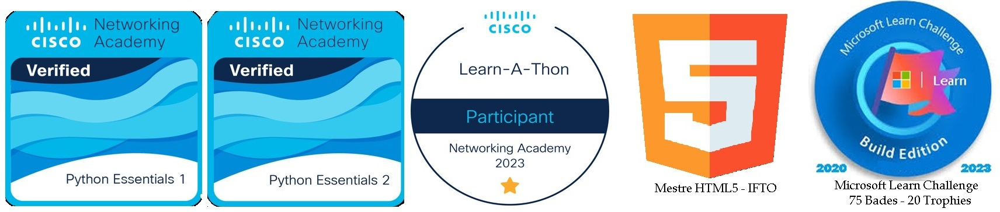

Experiências Profissionais
➯ LUCK WAY® Informática (2001/2023):
(25 Anos) CEO, Proprietário - Atividades: Supervisão, Administração Financeira e Comercial, Gestao de TI, Programação, Técnicas em Informática, Relacionamento com Clientes, Auditoria;
➯ Escola Estadual N. Sra. Aparecida - EENSA (2024):
Professor - Curso Técnico em Turismo;
Disciplina: Tecnologia da Informação.
➯ Colégio Minas Austral - OBJETIVO(2022/2023):
Professor - Intinerário Formativo do Novo Ensino Médio;
Disciplina: Oficina Multidisciplinar: desenvolvimento na Formação Geral Básica articuladas com os Eixos Estruturantes como: Investigação Científica; Mediação e Intervenção Sociocultural, Meio Ambiente, Empreendedorismo, Ética Digital, Mundo do Trabalho, Tecnologia e Projetos Tecnológicos (Desenvolvimento Web e Linguagens).
➯ EBCT - Minist. Comunicações (1982/1999):
(17 anos) Supervisão, Gerencia e Executante Operacional;
Atividades: Atuação em diversas Unidades Operacionais, Gerência Administrativa, Técnico Controle Interno, Auditor, Supervisor, Gerencia Comercial, Organização de Unidades Operacionais, Criação de Serviços e Produtos, Arrecadação, Análise de Despesas/Receita e Criação e Metas, Coordenação de Cursos (Formação, Organização e aplicação);
➯ CEF - Caixa Econômica Federal (1977/1981):
(4 anos) Estagiário, Office-boy (Serviços Gerais);
Atividades: Serviços Internos, Almoxarifado, Atendimento ao Cliente, Organização de Acervo, Protocolos, Apreciação e Conferências, Serviços Contábeis e Conferências, Protocolos e Serviços Externos, Treinamentos a Estagiários e outros.
➯ Delegacia de Polícia Civil (1981-1982)- DELPOL:
(2 anos) Escrivão Policial (Criminal e Trânsito)"Add-hoc";
Atividades: Montagens de Processos Criminais, Trabalhos no Setor Jurídico, Protocolos, Desenvolvimento e Acompanhamento de Processo Jurídico Policial, Desenvolvimento de Processos penais e outras atribuições: Lavrar Boletins de Ocorrência, Desenvolver e Acompanhar Autos de Processos Jurídicos, Elaborar e Anexar Termos e Provas Materiais, Ouvir Envolvidos e Lavrar Documentos, Expedir Mandatos, Intimações ou Ordens de Serviço, bem como Demais Atos de Ofício, Serviços de Trânsito.
Reconhecimentos e Prêmios
➯Diploma de "HONRA AO MÉRITO"(2008)
Concedido(s) por Lar Fabiano de Cristo · (jan de 2008)
A Diretoria do Lar Fabiano de Cristo concedeu o "Diploma de Honra ao Mérito" a Luck Way Informática (Iraê César Brandão-ME) por participação no cinquentenário da Obra de Fabiano. - Certificado 3351. ass. pelo Diretor Presidente e Diretor Vice-Presidente do Lar Fabiano de Cristo - RJ
➯1° CAMPEÃO DE VENDAS (1997/1998)_
AG. EBCT-CAMBUQUIRA-MG, Concedido(s) por ECT = Publicado no Jornal de Cambuquira - Edição 323 de 01/01/1998 (dez-1997).
A qualidade humana e profissional dos funcionários da Agência ECT CAMBUQUIRA- MG por mim chefiadas, atestada com a premiação obtida com incentivo e incrementação as vendas a domicílio e inovação de mentalidade na comercialização de produtos diversos, sagrando-se Campeão de vendas da Coordenadoria Regional da ECT (Ministério das Comunicações-REOP 06-VGA).
➯MOÇÃO HONROSA POR RELEVANTES SERVIÇOS PRESTADOS (1994)
Concedido(s) pela CAMARA MUNICIPAL DE ITANHANDU - MG · (abr-1994).
Associado a Ministério das Comunicações- EBCT.
Na 37ª Sessão Ordinária Legislativa, realizada no dia 11 de abril de 1994, as 19:00 horas, foi requerido por vereador e aprovado por unanimidade pelo Plenário Legislativo, Moção parabenizando-me por RELEVANTES SERVIÇOS PRESTADOS À COMUNIDADE de Itanhandu (MG).
➯ BADGES (achievements)

➯
Python Essentials 1 (Cisco)
➯
Python Essentials 2 (Cisco)
➯
Networking Academy Learn-A-Thon (2023)
➯
Mestre em HTML5 (IFTO - 2022)
➯
Microsoft Learn Challenge (2020-2023)